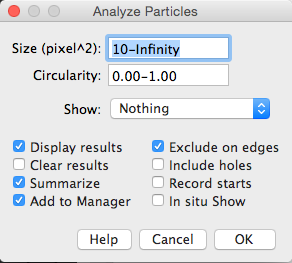

Counting cells

Aim
Count the number of cells in an image
1. Open image "[...]/images/Widefield/Cell Segmentation/Nuclei.tif"
2. Segment by thresholding:
Image → Adjust → Threshold
Li auto-thresholding method

Some nuclei are touching one another. Obviously this will skew the results; however, the "Watershed" binary morphology filter is able to split touching objects. It works particularly well for ellipsoid shapes.
3. Split touching cell using watershed.
Process → Binary → Watershed

4. Use connected components (or Particle Analysis in the ImageJ world) to count number of cells and extract cellular parameters.
Analyze → Analyze Particles...

Note: Filtering the output is really useful. For instance, setting a small size filter can help to exclude tiny speckles that might arise from noise derived 'bright' pixels that make the threshold.